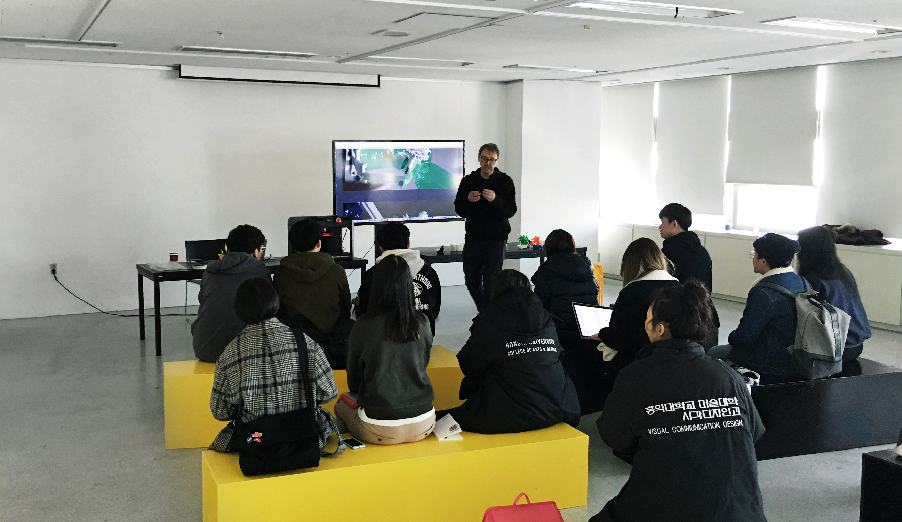
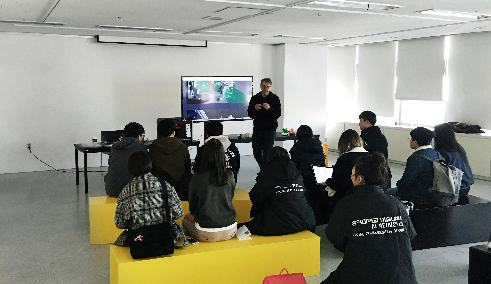
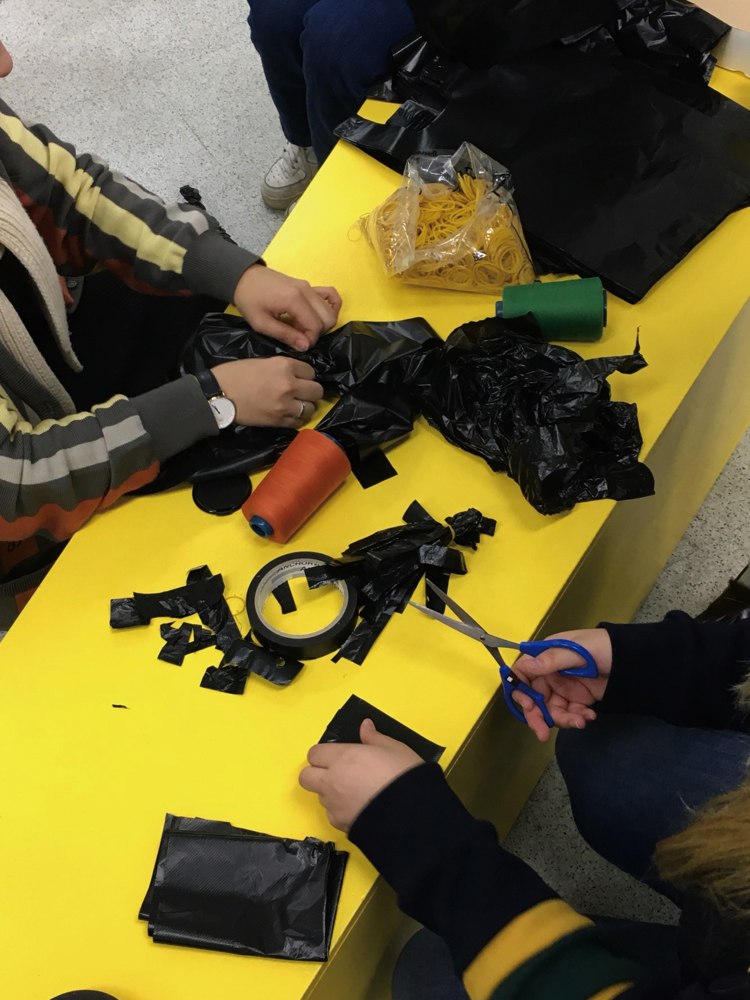
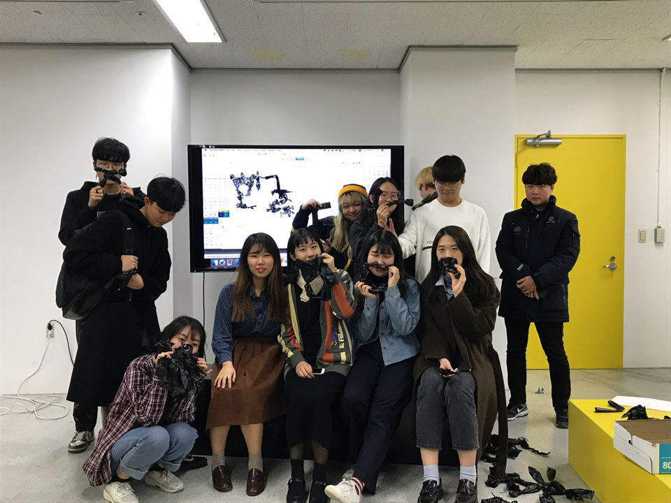
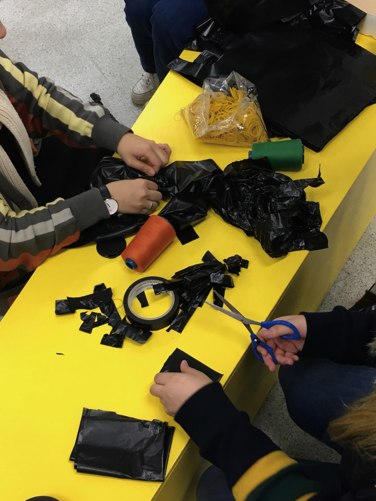
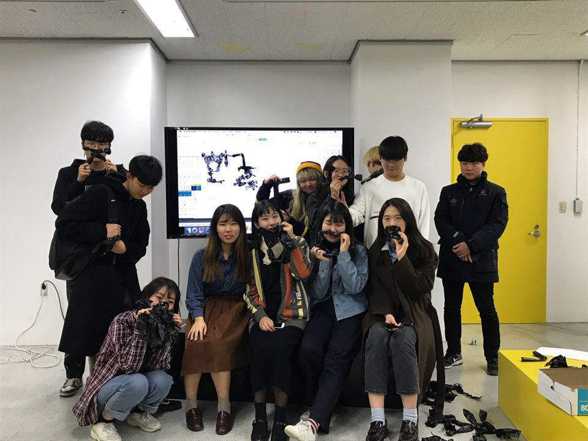

워크숍은 사진, 광고, 타이포그라피 등 시각디자인의 다양한 분야를 1 – 2시간 안에 압축적으로 경험해보는 프로그램으로, 과 내 소모임 및 교수님께서 자체적으로 기획해 진행되었다. 올리버그림 교수님을 비롯하여 광고 소모임 ‘애드레날린’, 한글타이포그라피 소모임 ‘한글꼴연구회’, 사진 소모임 ‘힙스’, 코딩/프로토타이핑 소모임 ‘프로토’가 참여했다. 학생들은 프로그램실에서 토크, 세미나, 영화 상영 등 다양한 방법을 통해 자신의 작업을 확장해 보여주었다.
3D프린터프가이
올리버 그림, 이길영
3D프린터를 이용하는 법을 배우는
워크숍.
3D모델링 이후 3D프린터용
확장자로 변환하는 방법, MakerBot
프로그램을 이용하는 방법 등
3D프린터 이용 시 주의사항과 팁을
배울 수 있다. 본 워크숍에 참여한
재학생들에게는 시각디자인과의
3D프린터를 이용할 자격이 주어진다.
 

날 소개해버렸고
애드레날린 (홍서희 외 7명)
‘자신을 500자 이내로 소개하시오’ 우린 항상 나를 남에게 소개해야 하고 나를 소개하는 것은 항상 어렵다. 이는 각자가 무한한 특성이 있기 때문이고 무한한 방식으로 표현 할 수 있기 때문이다. 광고 소모임 ‘애드레날린’ 워크숍 에서는 광고의 요소들로 자신을 표현해 본다. 포토존에서 본인을 대표하는 3장의 이미지를 찍고 한 문장의 카피를 만들면, 이것으로 본인을 광고하는 ‘나만의 포스터’가 만들어진다.


사진 2도 리소 워크샵
힙스(정다혜, 정대봉, 황정아)
리소 인쇄는 잉크젯 프린트나 오프셋 인쇄와는 달리 색을 겹치고 쌓는 방법으로 진행된다. 또한, CMYK 로는 만들지 못하는 별색 색상을 낼 수 있다. 이 워크샵에서는 두 가지 색상을 사용하여 자신이 찍은 사진을 리소로 인쇄한다. 포토샵을 이용해 분판을 하는 방법부터 색상이 겹치고 쌓였을 때 나타나는 효과, 그리고 리소 인쇄 공정을 체험할 수 있다.

프로토 뉴미디어 워크샵(nW)
01:
아두이노를 이용한 미디어 아트 기초
프로토 (엄태욱, 조애리)
프로토 뉴미디어 워크샵(nW)은 다양한 기술을 사용하여 예술의 분야에 접목해보는 것을 체험해보는 프로그램이다. 프로그래밍이 가지는 학술적인 성격을 벗어나 새로운 영역을 접해보는 데에 의의가 있다. nW 01에서는 아두이노와 프로세싱을 이용해 피지컬 컴퓨팅의 기초를 배운다. 초음파, 감광 등의 센서를 이용해 그래픽을 만들어보면서 어떻게 실제 세계와 컴퓨터 세계가 상호작용 하는 지 이해할 수 있다.
workshop.ttf
한글꼴연구회 (김락현, 옥성빈, 이우경)
즉석에서 쓰이고 버려지는 ‘검정 비닐봉지’를 소재로, 즉석에서 한글 글꼴을 만든다. 참여자들에게 한글 낱자를 하나씩 부여하고 참여자들은 자신에게 부여된 낱자를 비닐봉지를 이용해 자유롭게 만든다. 만들어진 한글 낱자는 글꼴로 영원히 박제된다. 글꼴은 워크숍에 참여한 사람들에게 그 자리에서 배포된다.
 


